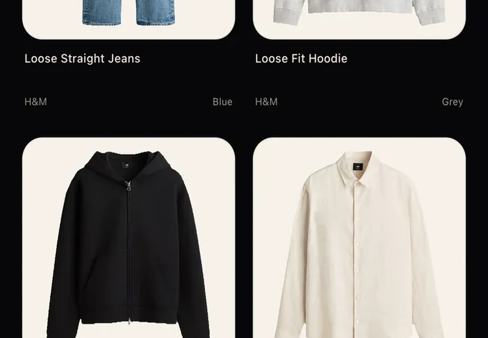
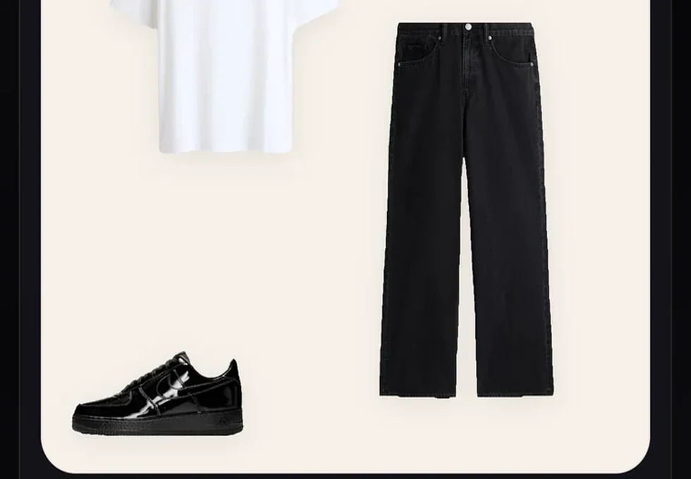
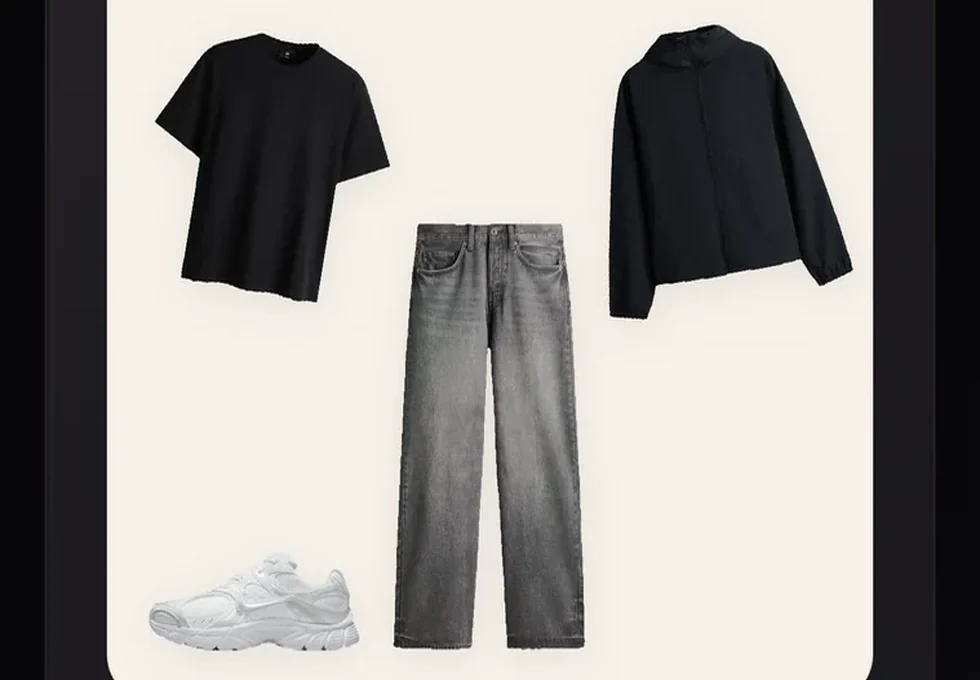
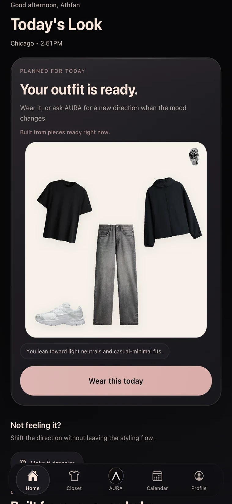
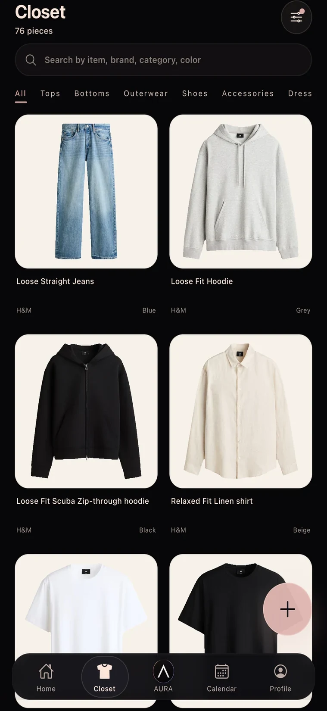
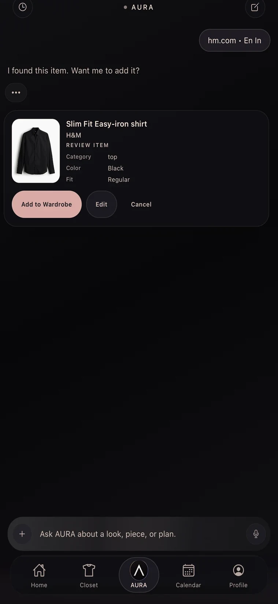
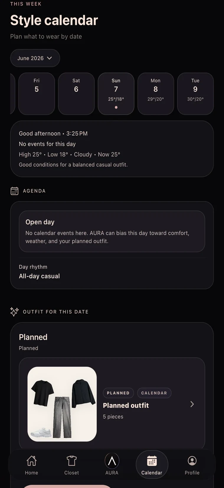
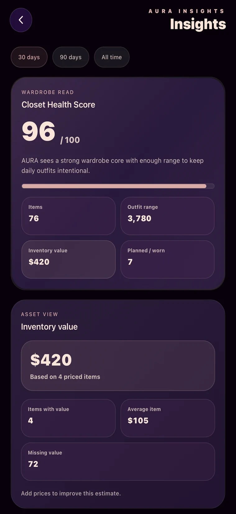

01
Add your clothes
Upload photos, paste product links, or save pieces from outfit photos. AURA turns your wardrobe into clean, usable digital items.
Build a digital closet, ask AURA what to wear, and plan outfits from clothes you already own.
Early Access Beta · iOS first · Limited tester spots
AURA styles you using your real wardrobe.
Closet, chat, calendar, and insights working together in a private styling system.

Upload photos, paste product links, or save pieces from outfit photos. AURA turns your wardrobe into clean, usable digital items.

Ask for outfits, fit checks, event looks, or styling ideas. AURA responds with visual outfit cards and practical suggestions.

Save looks, plan outfits by date, and build a smarter wardrobe over time.
AURA is not just a chatbot. It brings closet management, AI styling, planning, and wardrobe intelligence into one beta experience.
Keep your wardrobe organized with clean item photos, categories, colors, materials, fits, and wear status.
Ask what to wear for a date, office day, festival, dinner, travel, or anything else.
Get visual looks built from your real closet, with styling notes and missing-piece suggestions.
Remove messy backgrounds and turn clothing photos into clean closet-ready items.
Paste a clothing link and AURA can help extract the item details for review.
Plan what to wear today or on future dates.
Turn inspiration photos into closet items during Early Access testing.
Keep your favorite outfits and come back to them anytime.
Understand color identity, underused items, and wardrobe gaps.
See what essentials you need to unlock more outfit combinations.
Get suggestions based on your wardrobe, sizes, colors, and goals.
Talk to AURA when typing is too slow.





Your clothes, outfits, and styling chats are personal. AURA is designed around private wardrobe intelligence, not public profiles or social feeds.
During beta, AURA may process photos, product links, and chat messages to provide styling features. Full details should be available in the Privacy Policy.
Your closet is yours. AURA is not a public social closet.
AURA uses your wardrobe and preferences to make styling more useful.
Your wardrobe is not shared publicly. You stay in control.
Early Access users should be able to delete their account and data.
We’re opening AURA slowly to improve quality, control AI costs, and learn from real wardrobes. Request access and we’ll invite testers in small batches.
Limited spots. iOS beta invites first. AI suggestions can make mistakes and are improving during beta.
AURA is an AI personal stylist that helps you build a digital closet, generate outfits, plan looks, and get styling advice from clothes you already own.
AURA is currently in Early Access Beta. Some AI features may be limited during beta while we test quality and cost.
Yes. AURA is designed to style you from your actual closet, not random generic items.
Yes. AURA uses AI and can make mistakes with styling, item details, colors, or recommendations. Beta feedback helps improve it.
AURA supports product link import for some retailers during beta. Coverage may vary.
Outfit photo analysis is being tested during Early Access and may not be available to every beta user immediately.
No. AURA is not a public social closet. Your wardrobe is designed to stay private.
Request Early Access through the website. We’ll invite testers gradually.